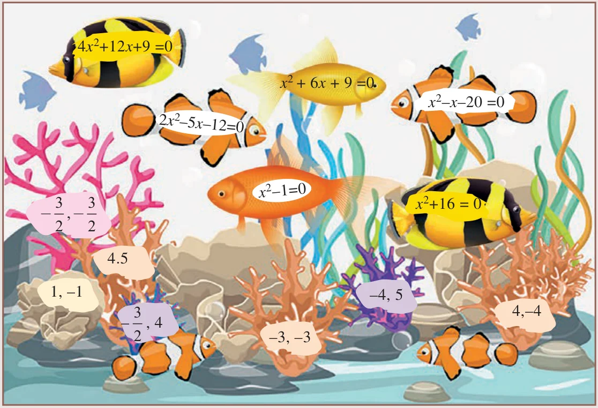

- Solve the following quadratic equations by factorization method
- \(4x^2 - 7x - 2 = 0\)
- \(3(p^2 - 6) = p(p + 5)\)
- \(\sqrt{a(a - 7)} = 3\sqrt{2}\)
- \(\sqrt{2}x^2 + 7x + 5\sqrt{2} = 0\)
- \(2x^2 - x + \frac{1}{8} = 0\)
- The number of volleyball games that must be scheduled in a league with \(n\) teams is given by \(G(n) = \frac{n^2 - n}{2}\) where each team plays with every other team exactly once. A league schedules 15 games. How many teams are in the league?
Solving a Quadratic Equation by Completing the Square Method
In deriving the formula for the roots of a quadratic equation we used completing the squares method. The same technique can be applied in solving any given quadratic equation through the following steps.
- Step 1:
- Write the quadratic equation in general form \(ax^2 + bx + c = 0\).
- Step 2:
- Divide both sides of the equation by the coefficient of \(x^2\) if it is not 1.
- Step 3:
- Shift the constant term to the right hand side.
- Step 4:
- Add the square of one-half of the coefficient of \(x\) to both sides.
- Step 5:
- Write the left hand side as a square and simplify the right hand side.
- Step 6:
- Take the square root on both sides and solve for \(x\).
Example 3.30
Solve \(x^2 - 3x - 2 = 0\)
Solution
\(\begin{aligned} x^2 - 3x - 2 &= 0 \\ x^2 - 3x &= 2 && (\text{Shifting the Constant to RHS}) \\ x^2 - 3x + \left(\frac{3}{2}\right)^2 &= 2 + \left(\frac{3}{2}\right)^2 && \left(\text{Add } \left[\tfrac{1}{2}(\text{co-efficient of } x)\right]^2 \text{ to both sides}\right) \\ \left(x - \frac{3}{2}\right)^2 &= \frac{17}{4} && (\text{writing the LHS as complete square}) \\ x - \frac{3}{2} &= \pm\frac{\sqrt{17}}{2} && (\text{Taking the square root on both sides}) \\ x = \frac{3}{2} + \frac{\sqrt{17}}{2} &\text{ or } x = \frac{3}{2} - \frac{\sqrt{17}}{2} \end{aligned}\)
Therefore, \(x = \frac{3 + \sqrt{17}}{2},\ \frac{3 - \sqrt{17}}{2}\)
Example 3.31
Solve \(2x^2 - x - 1 = 0\)
Solution
\(\begin{aligned} 2x^2 - x - 1 &= 0 \\ x^2 - \frac{x}{2} - \frac{1}{2} &= 0 && (\div 2 \text{ make co-efficient of } x^2 \text{ as } 1) \\ x^2 - \frac{x}{2} &= \frac{1}{2} \\ x^2 - \frac{x}{2} + \left(\frac{1}{4}\right)^2 &= \frac{1}{2} + \left(\frac{1}{4}\right)^2 \\ \left(x - \frac{1}{4}\right)^2 &= \frac{9}{16} = \left(\frac{3}{4}\right)^2 \end{aligned}\)
\(x - \frac{1}{4} = \pm\frac{3}{4} \;\Rightarrow\; x = 1,\ -\frac{1}{2}\)
Solving a Quadratic Equation by Formula Method
The formula for finding roots of a quadratic equation \(ax^2 + bx + c = 0\) (derivation given in section 3.6.2) is \(x = \frac{-b \pm \sqrt{b^2 - 4ac}}{2a}\).
Do you know?
The formula for finding roots of a quadratic equation was known to Ancient Babylonians, though not in a form as we derived. They found the roots by creating the steps as a verse, which is a common practice at their times. Babylonians used quadratic equations for deciding to choose the dimensions of their land for agriculture.
Example 3.32
Solve \(x^2 + 2x - 2 = 0\) by formula method
Solution
Compare \(x^2 + 2x - 2 = 0\) with the standard form \(ax^2 + bx + c = 0\)
\(a = 1,\ b = 2,\ c = -2\)
\(x = \frac{-b \pm \sqrt{b^2 - 4ac}}{2a}\)
substituting the values of \(a\), \(b\) and \(c\) in the formula we get,
\(x = \frac{-2 \pm \sqrt{(2)^2 - 4(1)(-2)}}{2(1)} = \frac{-2 \pm \sqrt{12}}{2} = -1 \pm \sqrt{3}\)
Therefore, \(x = -1 + \sqrt{3},\ -1 - \sqrt{3}\)
Example 3.33
Solve \(2x^2 - 3x - 3 = 0\) by formula method.
Solution
Compare \(2x^2 - 3x - 3 = 0\) with the standard form \(ax^2 + bx + c = 0\)
\(a = 2,\ b = -3,\ c = -3\)
\(x = \frac{-b \pm \sqrt{b^2 - 4ac}}{2a}\)
substituting the values of \(a\), \(b\) and \(c\) in the formula we get,
\(x = \frac{-(-3) \pm \sqrt{(-3)^2 - 4(2)(-3)}}{2(2)} = \frac{3 \pm \sqrt{33}}{4}\)
Therefore, \(x = \frac{3 + \sqrt{33}}{4},\ \frac{3 - \sqrt{33}}{4}\)
Example 3.34
Solve \(3p^2 + 2\sqrt{5}p - 5 = 0\) by formula method.
Solution
Compare \(3p^2 + 2\sqrt{5}p - 5 = 0\) with the Standard form \(ax^2 + bx + c = 0\)
\(a = 3,\ b = 2\sqrt{5},\ c = -5\).
\(p = \frac{-b \pm \sqrt{b^2 - 4ac}}{2a}\)
substituting the values of \(a\), \(b\) and \(c\) in the formula we get,
\(p = \frac{-2\sqrt{5} \pm \sqrt{(2\sqrt{5})^2 - 4(3)(-5)}}{2(3)} = \frac{-2\sqrt{5} \pm \sqrt{80}}{6} = \frac{-\sqrt{5} \pm 2\sqrt{5}}{3}\)
Therefore, \(p = \frac{\sqrt{5}}{3},\ -\sqrt{5}\)
Example 3.35
Solve \(pqx^2 - (p + q)^2x + (p + q)^2 = 0\)
Solution
Compare the coefficients of the given equation with the standard form \(ax^2 + bx + c = 0\)
\(a = pq,\ b = -(p + q)^2,\ c = (p + q)^2\)
\(x = \frac{-b \pm \sqrt{b^2 - 4ac}}{2a}\)
substituting the values of \(a\), \(b\) and \(c\) in the formula we get,
\(\begin{aligned} x &= \frac{-\left[-(p + q)^2\right] \pm \sqrt{\left[-(p + q)^2\right]^2 - 4(pq)(p + q)^2}}{2pq} \\ &= \frac{(p + q)^2 \pm \sqrt{(p + q)^4 - 4(pq)(p + q)^2}}{2pq} \\ &= \frac{(p + q)^2 \pm \sqrt{(p + q)^2\left[(p + q)^2 - 4pq\right]}}{2pq} \\ &= \frac{(p + q)^2 \pm \sqrt{(p + q)^2(p^2 + q^2 + 2pq - 4pq)}}{2pq} \\ &= \frac{(p + q)^2 \pm \sqrt{(p + q)^2(p - q)^2}}{2pq} \\ &= \frac{(p + q)^2 \pm (p + q)(p - q)}{2pq} = \frac{(p + q)\{(p + q) \pm (p - q)\}}{2pq} \end{aligned}\)
Therefore, \(x = \frac{p + q}{2pq} \times 2p,\ \frac{p + q}{2pq} \times 2q\) we get, \(x = \frac{p + q}{q},\ \frac{p + q}{p}\)
Activity 3
Serve the fishes (Equations) with its appropriate food (roots). Identify a fish which cannot be served?
